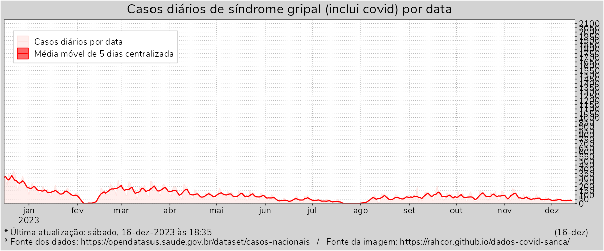
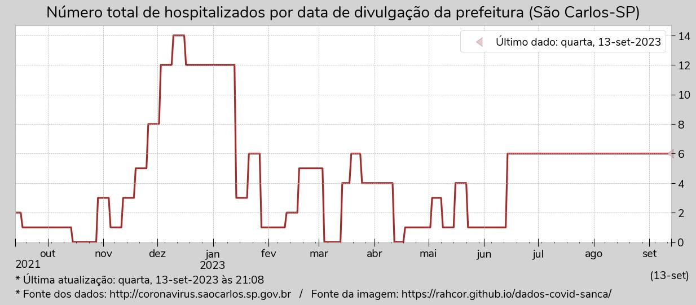
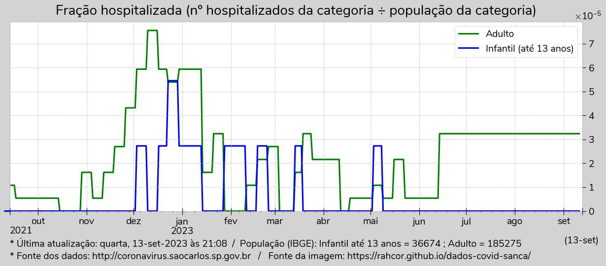

Atenção! Por decisão da Secretaria de Saúde de São Carlos (clique nesse link e leia o último parágrafo), o boletim com os dados que uso para alimentar o site será publicado somente às sextas-feiras. Assim que possível tentarei retornar o monitoramento diário usando os dados do OpendataSus.
(Atualização às 22h00 nas sextas-feiras)




Dados coletados das imagens dos boletins do site da prefeitura: http://coronavirus.saocarlos.sp.gov.br
Arquivo zip com as imagens dos boletins coletados até 24/05/2022: images-src-20220524.zip (274MB)
Script em Python de coleta dos dados e atualização dos gráficos: autoupdate-20210110.py
Arquivo com a fonte de cada dado coletado: urldict.json
Arquivo com dados de hospitalização: db-hosp.json
Arquivo com dados de casos e óbitos: db.json
Construído com python e bibliotecas, pandoc e water.css.